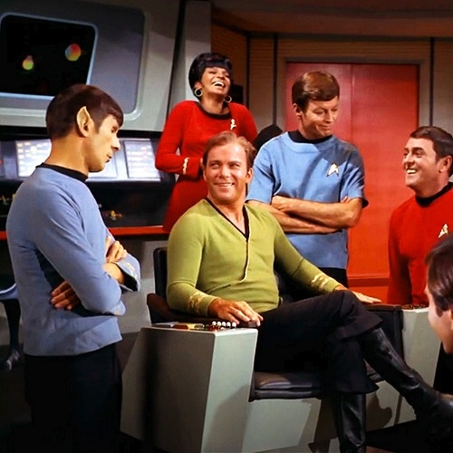

Star Trek Episodes and the fleeting nature of time.
Time. A fickle thing. Without our careful vigilance, our swift maintenance of it, time could pass through our fingers swifter than the sands that pass through the hourglasses that dictate the span of our lives. Time, such an important concept, yet so difficult to grasp for many. What truly makes up time? Well, dear user, today we shall endeavour to place a new significance that may very well distort our very perception of time; we will use time in relation to Star Trek episodes.
For those of you who do not know, Star Trek was a sci-fi television series that ran from 1966 to 1969. The series follows the crew of the starship Enterprise, a Starfleet vessel, and the adventures of the crew as they partake on a five year mission to, as the introduction of the show declares, "explore strange new worlds, to seek out new life and new civilizations, to boldly go where no man has gone before". The series was created by Gene Roddenberry. Though the series is over 50 years old, it still remains popular and a recognizable name to this day; with over 6 television series and 9 films created in the same universe, the most recent of which will premiere on May 6th, 2022, it is easy to see the legacy that this show has produced, though the Original Series was somewhat short-lived.
In this website, you will find two functions. The first function will calculate the amount of time needed in hours to watch a specified number of Star Trek episodes. The second function will calculate the amount of episodes that can be watched in a specified number of time in hours.
Function One: Time Required for Star Trek Episode Viewing
Ah yes, I see! You are interested in watching Star Trek, however you need to plan the time accordingly in your life. I admire the dedication to order. Shall we spare some time and energy and simply proceed to the function? I believe we shall.
Function Two: Number of Episodes Viewable in a Specific Time Period
As we know, time is very complicated. Sometimes, you only have a limited amount of time, but alas this does not stop the Star Trek Grind. Enter the amount of time you have available to you in hours, and the computer will calculate how many episodes can be viewed in this time frame in a swift manner.